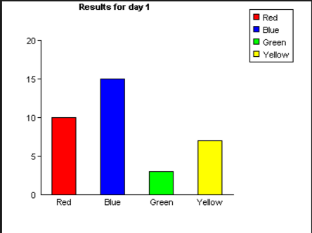

G73: Providing a long description in another location with a link to it that is immediately adjacent to the non-text content
| HTML Snippet | Code |
|---|---|
Scenario 1: Bar graph which is not having alternate link text | |
Bar graph of a university report about students attendance at day1Description of charts in the pageThe above bar graph represents the number of students attendance in Andhra university btech college when college was reopened after holidays
|
|
Scenario 2: Bar graph with invalid reference of long description | |
| Long description |
|